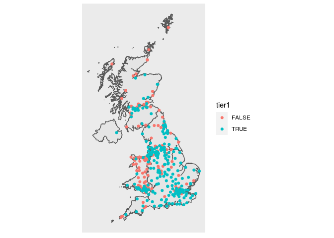

arear
This package provides a suite of geo-spatial functions that were useful during the response to the COVID-19 pandemic in the UK. It provides some curated data relevant to hospital capacity in the NHS, and demographic data for the UK at the beginning of the pandemic. Coupled with this are a range of functions to simplify the management of mapping data between different administrative geographies, at different levels of detail that were involved in COVID-19 reporting. For mapping community case data to hospital admissions data the library provides an algorithmic hospital catchment area estimation based on label propagation, the methods for which are described in detail here - AWAITING FINAL URL. Many of the operations in the package involve time consuming calculations, which only generally need to be performed once, so the package incorporates a transparent filesystem caching layer to speed it all up.
Installation
Arear is not yet on CRAN. Arear has a dependency on the sf package which in turn requires the gdal, geos and proj libraries. These can
# in debian / ubuntu
sudo add-apt-repository -y ppa:ubuntugis/ubuntugis-unstable
sudo apt-get -q update
sudo apt-get -y install libudunits2-dev libgdal-dev libgeos-dev libproj-dev
# or on macOS
brew install gdal proj geosYou can then install the development version of arear from GitHub with the following commands:
# install.packages("devtools") devtools::install_github("terminological/arear")
This can take some time if sf has not already been set up.
Example
Without this package accessing maps relevant to the UK requires knowing where to look for various shape files, and then managing the various differences between nomenclature and naming conventions. The package provides a simple interface to downloading, extracting, standardising, and caching the main UK maps. Getting and plotting a map for the UK based on the administrative code in use is made relatively simple:
library(arear) library(sf) #> Linking to GEOS 3.7.1, GDAL 2.2.2, PROJ 4.9.2; sf_use_s2() is TRUE # list the available maps ids: # arear::listStandardMaps() map = arear::getMap("CTRY19") #> using cached item: ~/.cache/arear-vignette/CTRY19-4c76523a56d19ec1a8fea7c3d89b0c97-e8ad913f081c0dbf1597ddd548bcd596.rda nhshospitals = arear::surgecapacity %>% dplyr::filter(sector == "NHS Sector") ggplot()+ geom_sf(data=map)+ geom_sf(data=nhshospitals, aes(colour=tier1))+ arear::mapTheme()
